VGTT: Feed-Forward Visual Geometry Token Transmission for 6G Immersive Communication
2Shanghai Jiao Tong University (SJTU)
3Chongqing University of Posts and Telecommunications (CQUPT)
4University of Electronic Science and Technology of China (UESTC)
We propose VGTT, a wireless 3D delivery paradigm for 6G immersive communication. Instead of sending raw 3D primitives or compressed 2D views, VGTT transmits geometry-aware semantic tokens distilled by cross-view spatial reasoning.
- Unified Token Representation Tokens distilled at the transmitter serve multiple 3D attributes, so the receiver predicts depth maps, point clouds, and camera poses in a single feed-forward pass.
- Channel-Aware JSCC Design Three components, LARA, DLCM, and CLIS, built on a neural joint source-channel codec, handle bandwidth allocation, channel protection, and feature recovery end to end.
- Dual-Level Transmission Geometric semantics and spatial detail are sent as two complementary levels, carried by a deep token anchor and a shallow token anchor.
In short, VGTT trades off bandwidth, latency, and fidelity while keeping channel robustness and task versatility, as a foundation for closed-loop digital twin networks.
Abstract
Synchronizing the 3D physical world with its digital counterpart is a core real-to-sim task of digital twin networks (DTNs) for 6G immersive communication. To build such a twin, the receiver needs several geometric attributes that downstream 3D tasks use together. Existing methods separate the representation and the transmission of these attributes: the occupancy-unit paradigm sends raw 3D primitives in one fixed format such as point clouds, while the pixel-feature paradigm sends compressed 2D views without conveying geometry and leaves the receiver to recover it. We propose Visual Geometry Token Transmission (VGTT), a paradigm that transmits geometry-aware semantic tokens as a unified representation, distilled through cross-view spatial reasoning at the transmitter, and predicts multiple 3D attributes from these tokens at the receiver in a single feed-forward pass. Under bandwidth and channel constraints, VGTT treats geometric semantics and spatial detail as two complementary levels and integrates three channel-aware components, LARA, DLCM, and CLIS, built on neural joint source-channel coding, to handle bandwidth allocation, channel protection, and feature recovery end to end. Experiments show that VGTT holds a bandwidth, latency, and fidelity trade-off while keeping channel robustness and task versatility, offering a scalable foundation for closed-loop DTNs in 6G immersive communication.
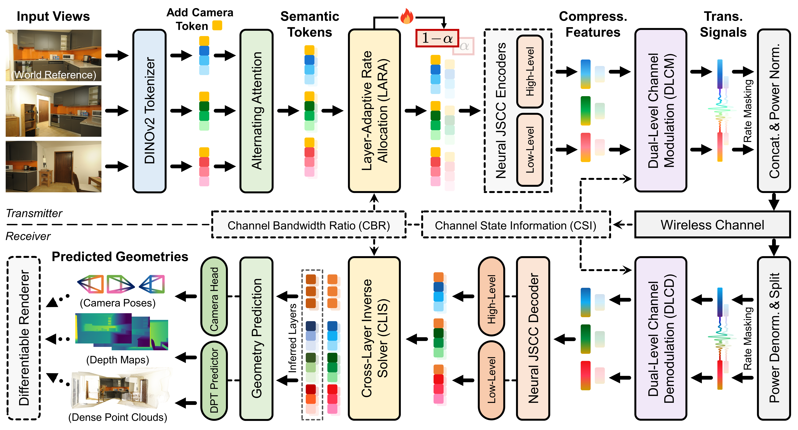
Observation
The geometry heads of VGGT read several layers of the Alternating-Attention backbone, but a wireless link cannot carry every layer in full. To see what each layer holds, we visualize the backbone token features layer by layer; the four panels below show the four layers that the DPT head reads. The features shift from texture-level patterns in the shallow layers to geometry-level structure in the deep layers, so the deepest layer alone is not enough: it keeps geometry but loses texture, and transmitting it by itself leaves the recovered geometry smoothed and object boundaries blurred. The four layers form two groups, a shallow group that carries spatial detail and a deep group that carries geometric semantics; layers correlate within a group and stay complementary across groups. This observation is the reason for the three modules of VGTT. Because the groups are not interchangeable, VGTT sends one anchor from each group and lets LARA split the channel budget between them as the channel varies. Because the two anchors differ in statistics and the deep anchor's camera token has no spatial redundancy, DLCM protects each anchor on its own path. Because each group is internally correlated, CLIS infers the non-transmitted layer from its same-group anchor at the receiver. Pick an input mode, a scene, and a frame; hover any panel to cross-fade it to the clean input.
Method
VGTT inherits the front end of VGGT: a DINOv2 tokenizer and an Alternating-Attention backbone turn unposed multi-view images into intermediate token features at every backbone layer. The geometry heads of VGGT impose two constraints on any transmission scheme. The DPT head reads a fixed set of four backbone layers, $\{\mathbf{z}_4, \mathbf{z}_{11}, \mathbf{z}_{17}, \mathbf{z}_{23}\}$, which sets an effectiveness constraint, since the receiver must deliver features at all four depths. The camera head reads a single camera token at the deepest layer, which sets a reliability constraint, since that token has no spatial redundancy. Guided by these constraints, VGTT places only a deep anchor $\mathbf{z}_{23}$ and a shallow anchor $\mathbf{z}_{11}$ on the wireless channel. The two anchors pass through LARA, an asymmetric pair of JSCC encoders, and DLCM before the channel; the receiver mirrors these stages with DLCD and a shared JSCC decoder, and CLIS restores the two non-transmitted layers so that the VGGT heads receive all four. The pipeline is trained over wireless channels in two stages, a channel-aware self-distillation stage followed by an end-to-end geometry-forcing stage, so that bandwidth allocation, channel protection, and feature recovery co-adapt across channel conditions.
Layer-Adaptive Rate Allocator (LARA)
LARA resolves the tension between the four-layer effectiveness constraint and the limited bandwidth of a wireless link. Transmitting only the deepest layer leaves the recovered geometry smoothed, because that layer carries geometric semantics but little texture. The four layers instead split into a shallow group rich in texture and a deep group rich in geometry, so VGTT sends one anchor from each group. The two anchors also differ in compressibility and in noise tolerance, and both depend on the channel state, so the split between them cannot be fixed in advance. Given the signal-to-noise ratio $\gamma$ and the target channel bandwidth ratio $\rho$, LARA forms an input $\mathbf{u}$ and predicts a split $\alpha$ that maps to the per-anchor dimensions:
Here $f_{\boldsymbol{\theta}}$ is a lightweight MLP and $D$ is the bottleneck width. The clamped range keeps either anchor from being starved, and the integers $d_{23}$ and $d_{11}$ drive a binary rate mask on the transmitted symbols. LARA learns the channel-conditioned allocation from the geometry losses, without direct supervision on $\alpha$.
Dual-Level Channel Modulator (DLCM)
Once LARA fixes the per-anchor rate, the JSCC encoders compress the two anchors and DLCM protects them before they enter the channel. A single shared modulator is not adequate: the two anchors carry information with different statistical character, and the deep anchor additionally inherits a structural vulnerability, since its camera token has no spatial redundancy and noise on it cascades into the pose and then into the depth and point maps. DLCM therefore uses two structurally identical but parameter-independent paths, one per anchor, each a Channel-ModNet cascade conditioned on the SNR $\gamma$ and ending in a sigmoid gate $\mathbf{g}(\gamma)$ applied to the compressed anchor $\mathbf{y}$:
A structurally symmetric demodulator, DLCD, mirrors DLCM at the receiver. The two ends share the SNR but not the weights, so DLCM and DLCD learn to communicate through an SNR-indexed family of coding policies.
Cross-Layer Inverse Solver (CLIS)
The DPT head needs four layers, but only the two anchors traverse the channel, so the receiver reconstructs the two non-transmitted layers locally, without any further channel use. Because each group is internally correlated, an auxiliary layer can be inferred from its same-group anchor, and the inference runs in a uniform deep-to-shallow direction. CLIS instantiates this with two parallel solvers, one per group:
Each solver $g_{\boldsymbol{\phi}}$ is a small MLP, applied per token and per frame. The mapping is intentionally non-residual: the deep anchor and the shallow auxiliary differ in feature norm, and a residual path would let the larger-norm anchor mask the smaller-norm shallow signal that the DPT head relies on.
Results
From the tokens recovered at the receiver, VGTT predicts several 3D attributes in a single feed-forward pass, and these predictions also support downstream rendering. The panels below show qualitative comparisons against baselines under wireless channels. Drag to rotate, hover to inspect, and switch scenes with the cards.
Point Cloud Reconstruction
VGTT decodes dense point maps from the tokens recovered at the receiver. Each viewer pair places VGTT against the baseline. Drag to rotate, scroll to zoom, and switch scenes with the cards below.
Camera Pose Estimation
VGTT predicts a per-view camera pose from the tokens recovered at the receiver. The viewers show the estimated camera frusta for VGTT and the baseline; switch scenes with the cards below.
Monocular Depth Estimation
VGTT predicts monocular depth from the tokens recovered at the receiver. Drag the slider to scrub through the sequence; the stitched view places the VGTT depth on the left and the baseline depth on the right. Hover a side frame to preview its noisy channel input, or click it to toggle the predicted depth.
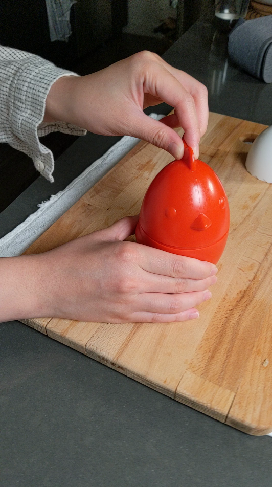
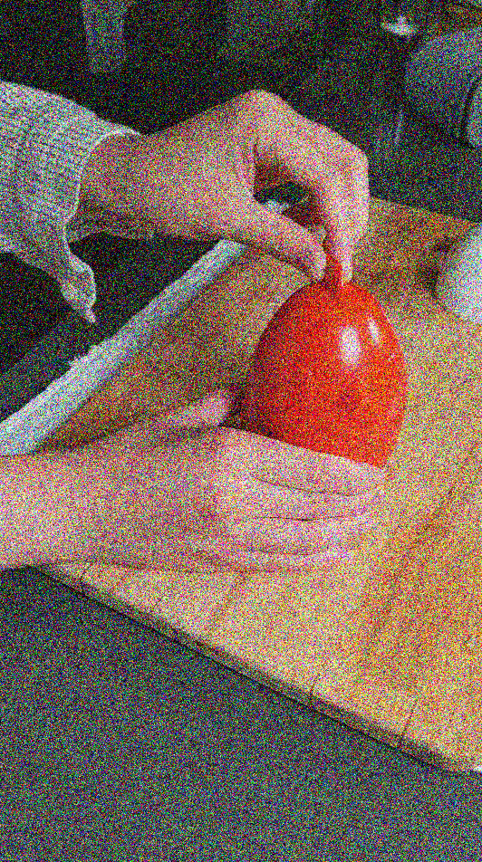
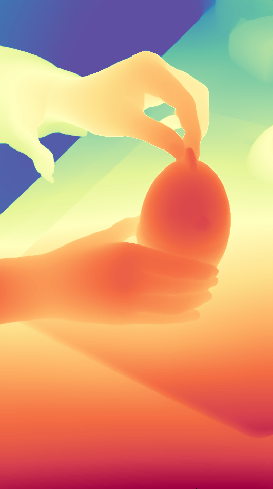
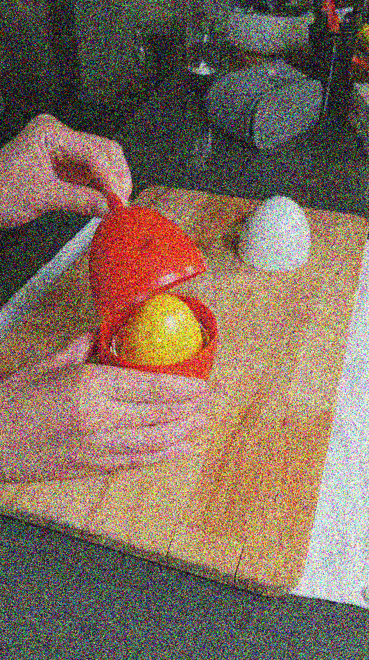
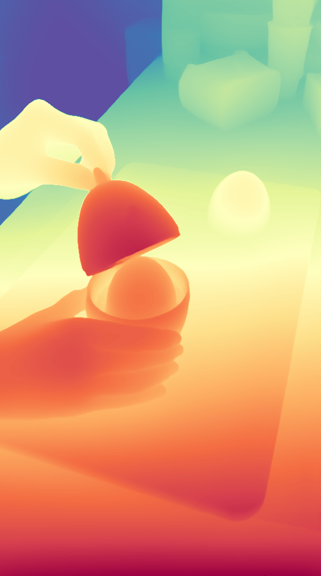
Start Frame
End Frame
Neural Scene Rendering
The camera poses and point maps predicted by VGTT initialize 3D Gaussian Splatting for novel-view rendering. Drag the divider to compare VGTT against the baseline, and switch scenes with the cards below.
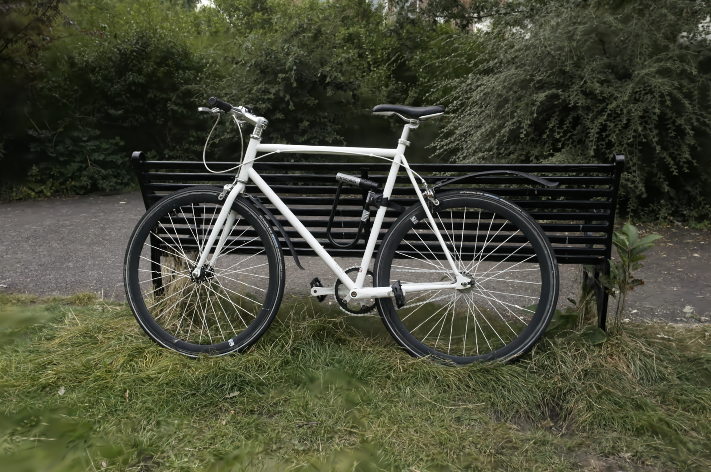
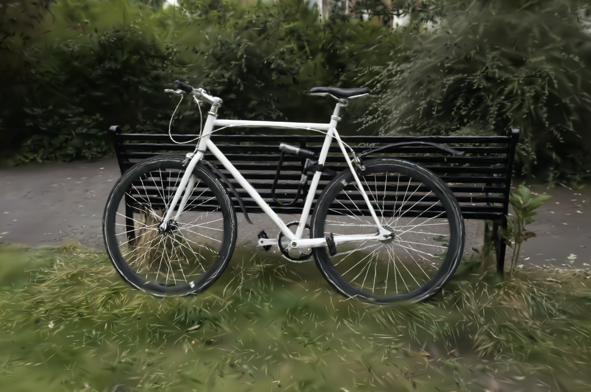
Additional VGTT renderings with 3D Gaussian Splatting across a range of synthetic and real-world scenes.
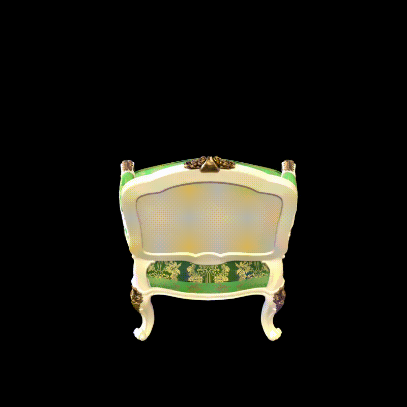
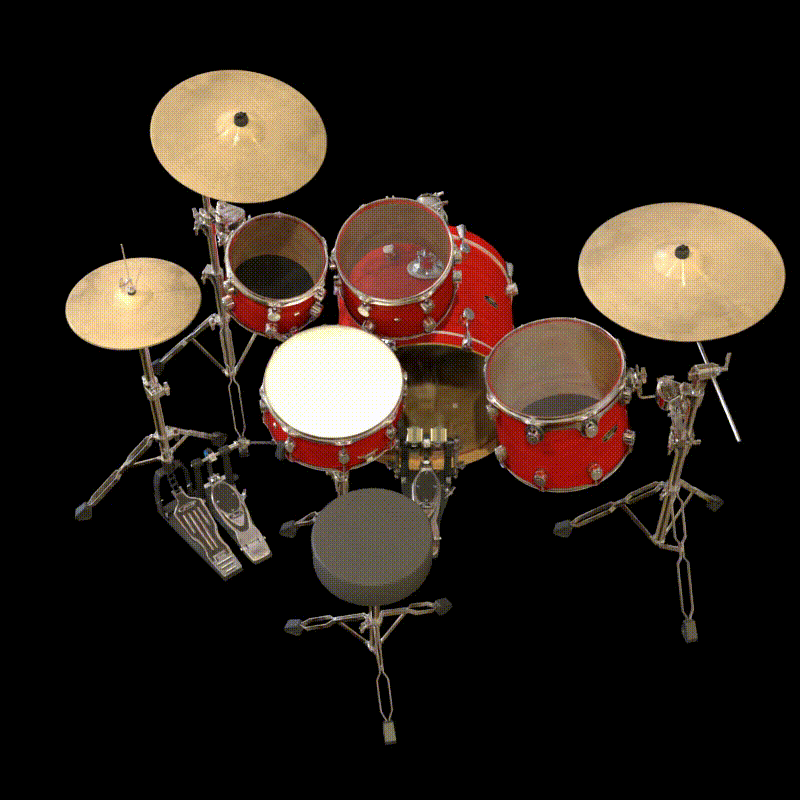
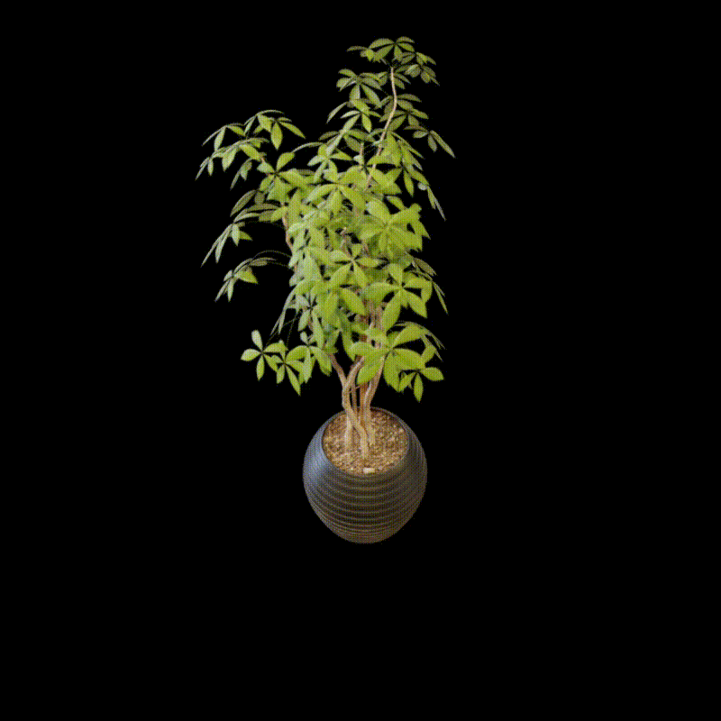
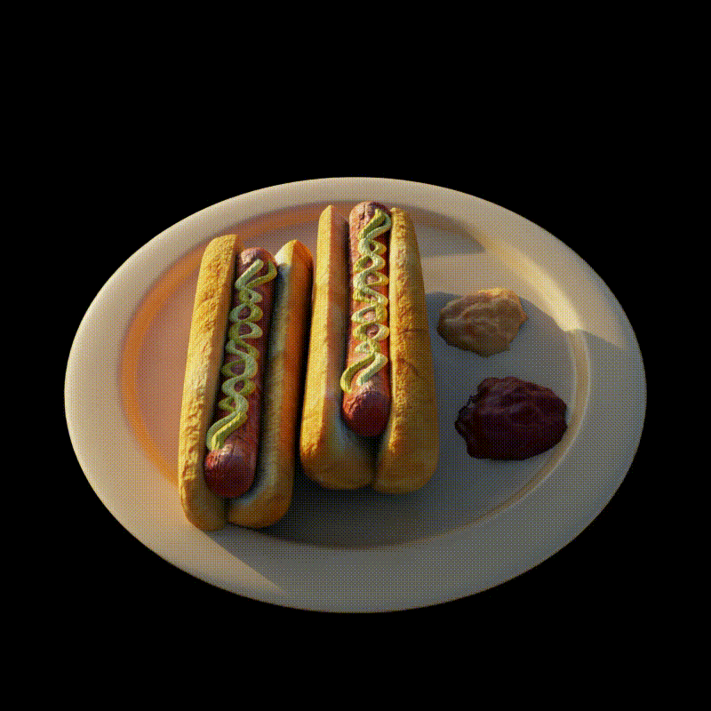
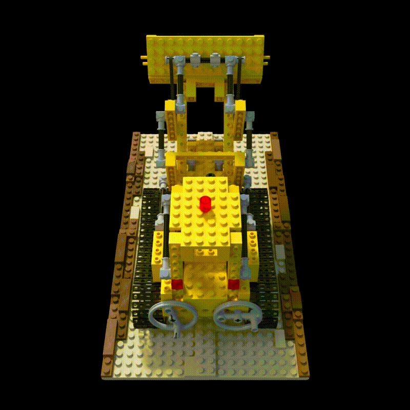
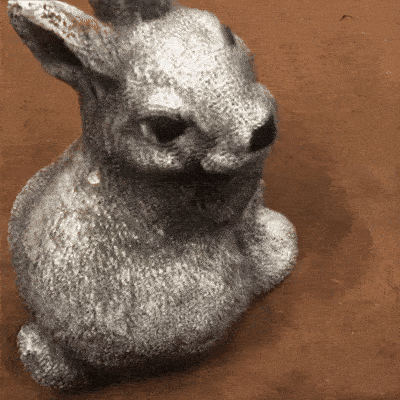
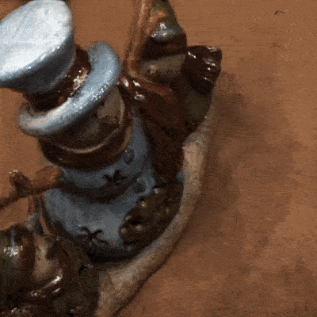
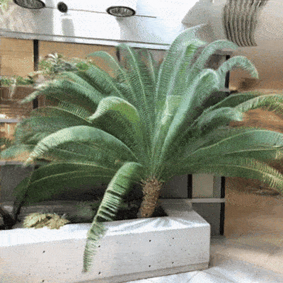
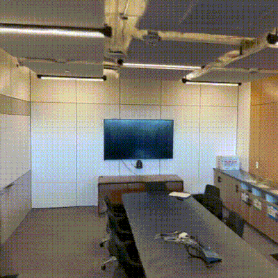
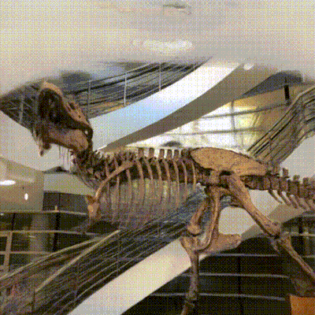
Qualitative rendering comparisons on synthetic and real-world scenes. Hover over an image to inspect fine details.
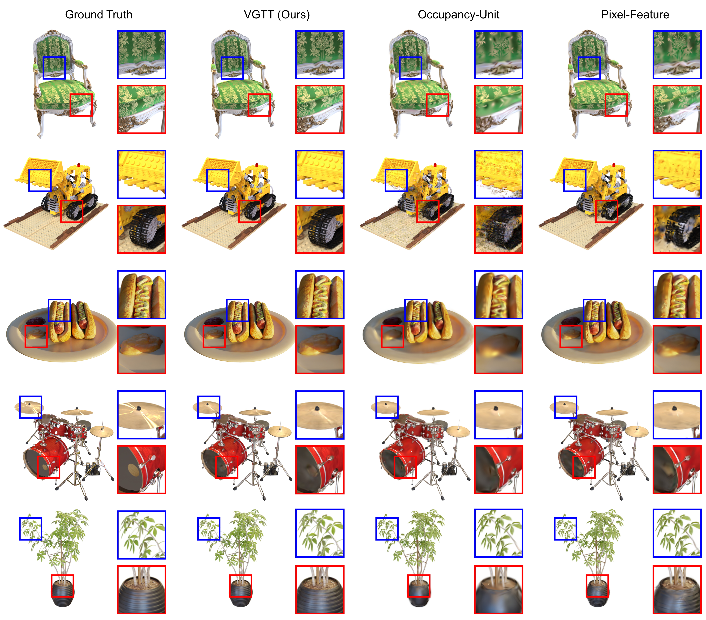
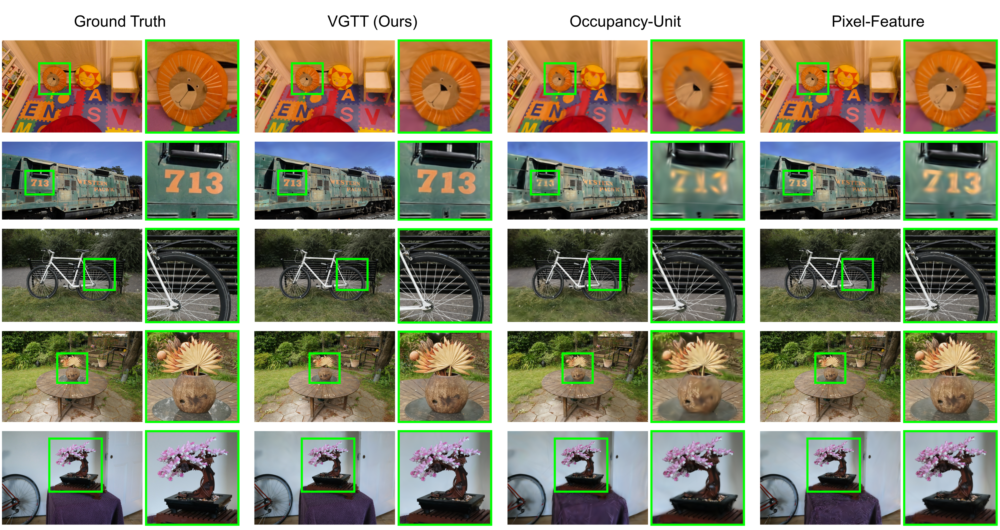
Citation
@article{qin-vgtt,
title = {VGTT: Feed-Forward Visual Geometry Token Transmission for 6G Immersive Communication},
author = {Qin, Hai-Long and Dai, Jincheng and Wang, Sixian and Lu, Guo and Luo, Lei and Zhu, Ce and Zhang, Wenjun and Zhang, Ping},
journal = {arXiv preprint arXiv:2605.xxxxx},
year = {2026}
}